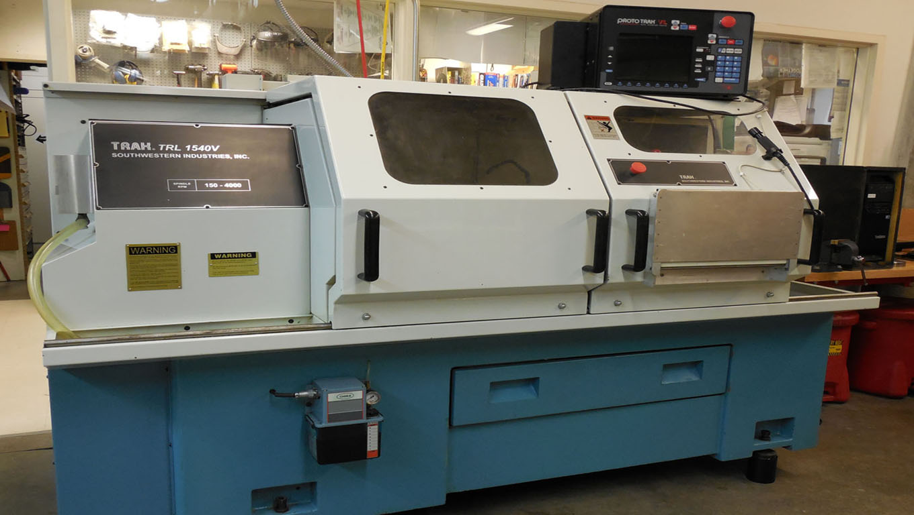
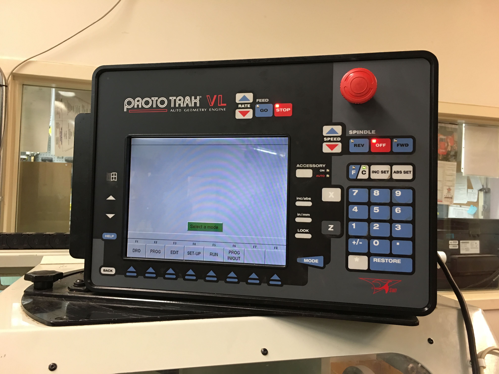
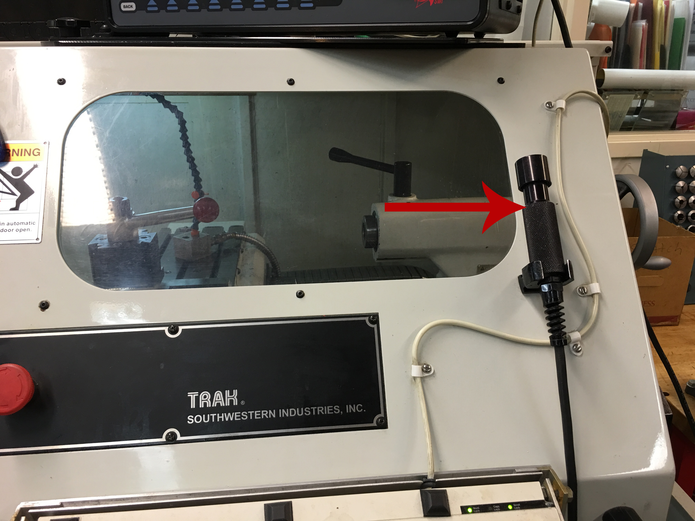
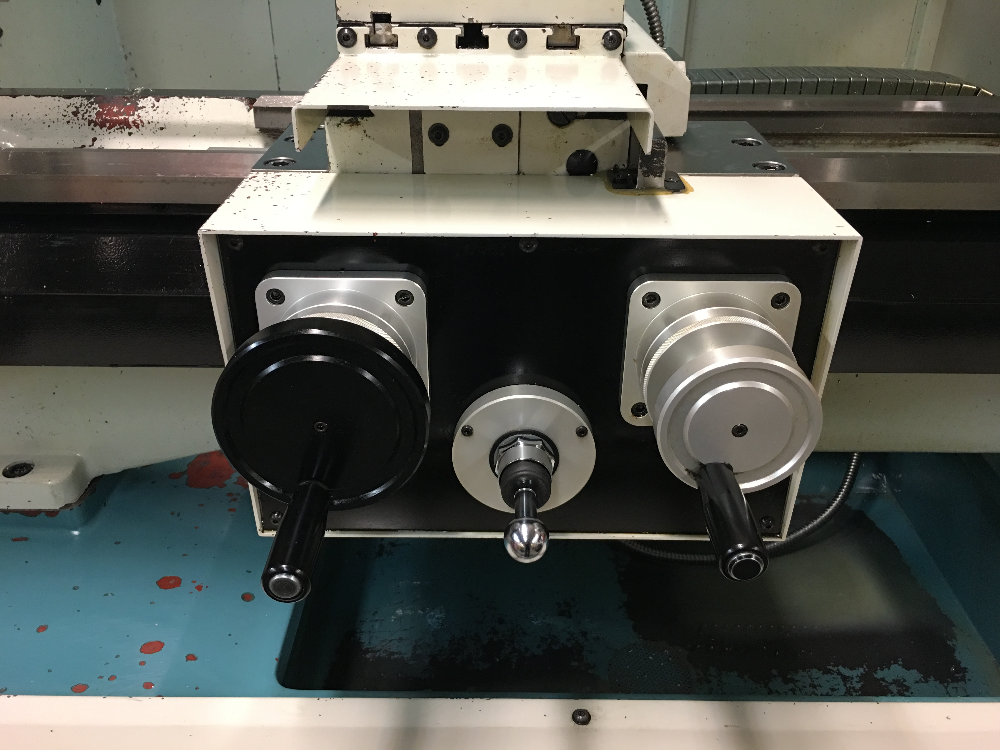
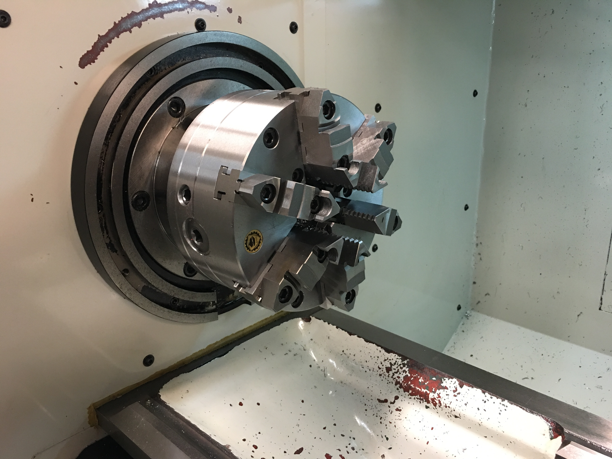
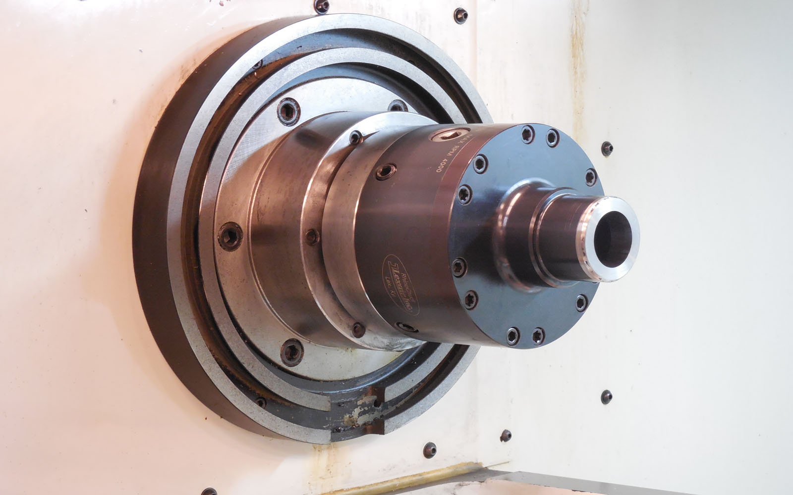
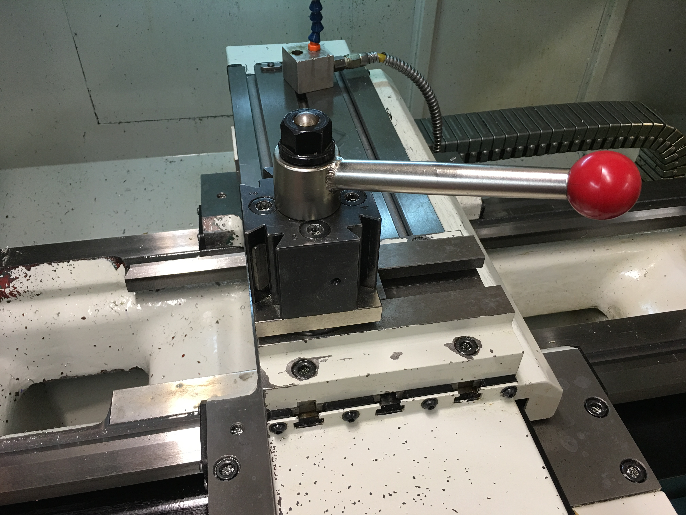
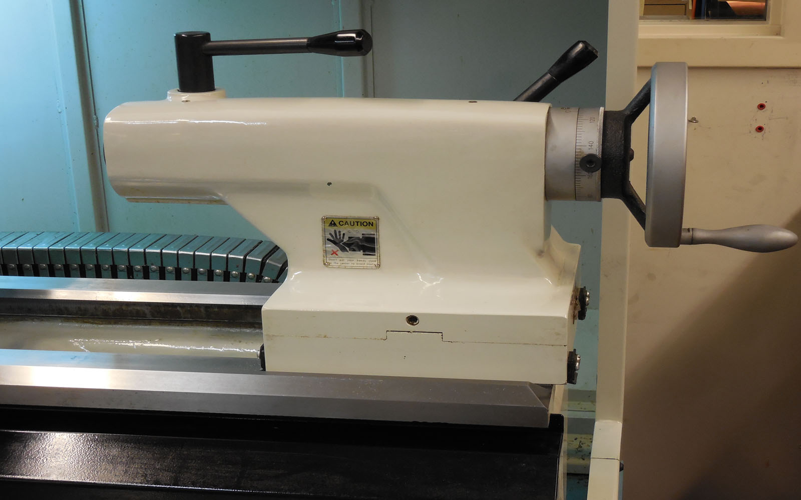

Getting Started¶
Before using the machine fully read and understand the material covered in this guide. This guide is not a replacement to the full documentation provided by Southwestern Industries. If you have any questions please ask one of the shop staff.
Overview¶
The Trak TRL 1540V is intended for medium sized CNC work. With a few minor exceptions, manual machining should not be done on this machine. The machine’s X & Z limits are 5” x 40” (127mm x 1016mm). The machine has a spindle speed range of 150 to 4000 RPM with a maximum feed rate of 50 IPM (1270 mm/m) in the X & Z axis.
Control Panel¶
The control panel is the primary control interface for the machine.
Remote Stop/Go Switch¶
The remote stop/go switch is a hand-held remote equivalent to the STOP/GO button on the control panel.
Apron¶
The apron is where the X & Z handwheels are located, along with the jog stick. You should familarize yourself with these controls and how they function.
Chuck¶
The chuck is used to hold your part. It has the capability to hold stock up 9”. If your stock exceeds 4”, you will need to reverse the jaws. Speak with one of the professional staff before reversing the jaws.
{kind=link}
Warning
Do not exceed 2200 RPMs, 1000 RPMs if the jaws are reversed.
The chuck is rated for a maximum 2200 RPMs. If the jaws are reversed, the maximum speed is 1000 RPMs. Exceeding the maximum RPM could result in damage to the chuck, machine, and potentially yourself.
Collet Closer¶
The lathe can use 5C collets when the chuck is replaced with a collet closer. These can run at speeds up to 4000 RPMs, but consult with professional staff before doing so.
Indexing Tool Post¶
The tool post can index to 4 different locations. Each tool needs to be set up and zeroed properly before running. Push the red handle away from you to allow the tool holder to rotate. A 5/16” hex wrench is used to remove the individual tools from the tool post. To avoid crashes, only use one tool at a time rather than loading all four locations.
Tailstock¶
The tailstock is used for drilling, when a drill chuck is installed, or supporting the material, by using a live center.